Acauã
 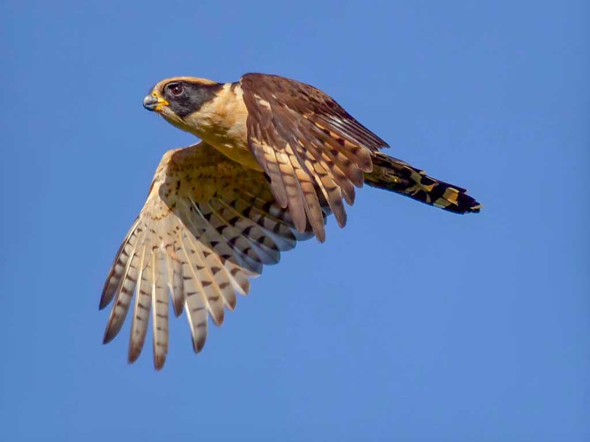
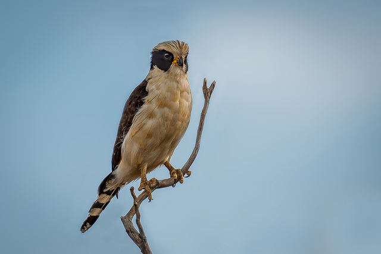
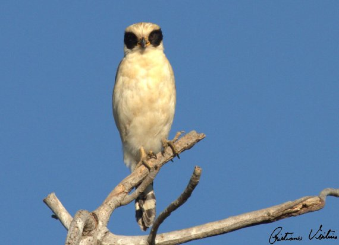
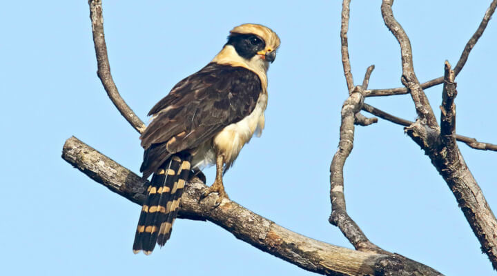
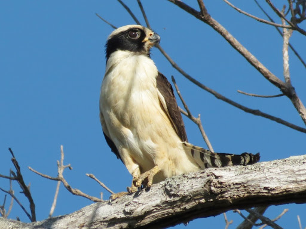
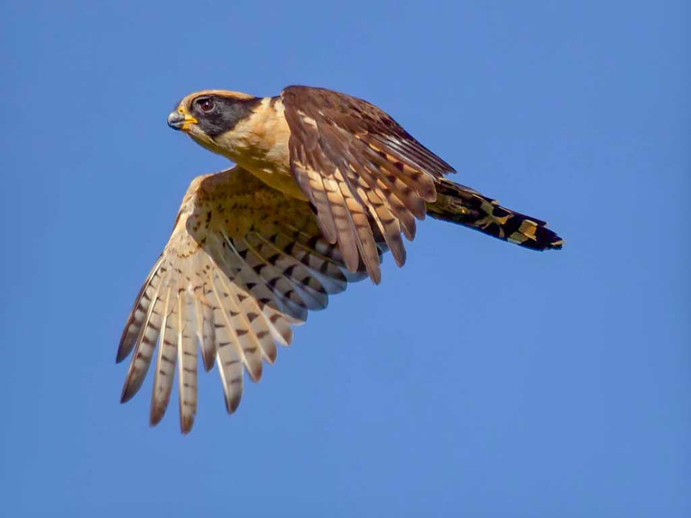
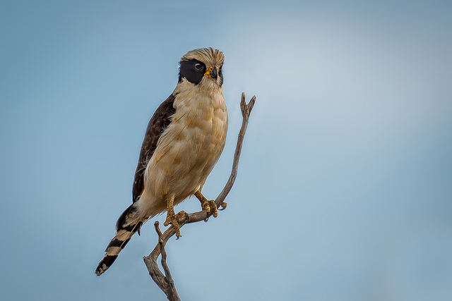
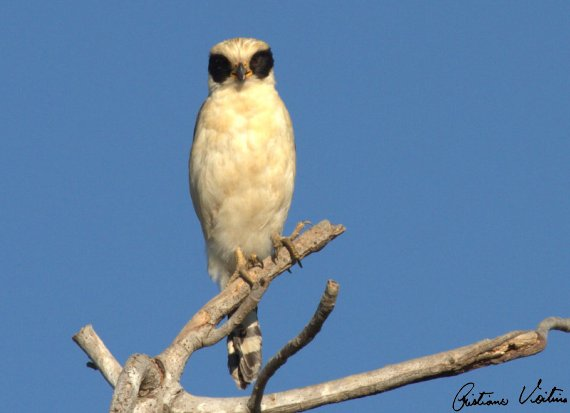
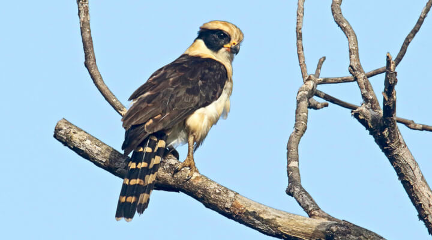
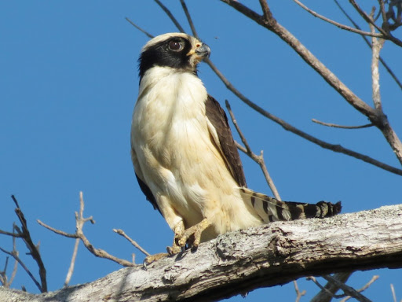
INFORMAÇÕES SOBRE O ANIMAL
- Nome Científico: Herpetotheres cachinnans
(Linnaeus, 1758) - Nomes Populares: macauá, acanã, cuã, cauã, coã, deus-quer-um, bispo, gavião-coveiro, cobreiro, papa-cobra, uacanã e macaguá.
Classificação Biológica
- Dominio: Eukaryota
- Reino: Animalia
- Filo: Chordata
- Classe Aves
- Ordem: Falconiformes
- Família: Falconidae
- Subfamília: Herpetotherinae
- Espécie: H. cachinnans
Nutrição Geral e Hábitos Alimentares
- Tipo de Nutrição: Heterotrófico
- Hábitos Alimentares
- Principais Presas: Cobras e Morcegos, é conhecido por ser um caçador nato desses animais.
É uma espécie Diurna, mas pode caçar no crepúsculo para apanhar morcegos. - Utiliza suas garras firmes e protegidas (possuem uma espécie de pele escamosa e grossa para não permitir a mordida das cobras penetrarem no corpo) para agarrar suas presas.
Morfologia Básica do Corpo
- Comprimento: O falcão Acuã mede entre 44 a 56cm de comprimento.
- Envergadura: A envergadura (distãncia entre as pontas das asas) varia de 80 a 105cm.
- Peso: O peso médio desse falcão está entre 480 a 800 gramas.
- Cabeça: Possui uma cabeça grande em relação ao corpo, com um bico robusto e curvado, típico das aves de Rapina.
- Plumagem: A plumagem é geralmente marrom com manchas e listras brancas e pretas.
- Cauda: A cauda é relativamente longa, com listras transversais.
- Patas: As patas são fortes, com garras afiadas adaptadas para capturar presas.
Comportamento Geral e Estratégias de Caça
- Comportamento Geral
O acauã é conhecido por sua agilidade e habilidade de caça. Ele é um predador especializado em capturar serpentes, incluindo as peçonhentas.
Essa ave de rapina não é imune ao veneno das serpentes, mas sua estratégia de predação evita que ele seja picado. Ele realiza voos surpresa com ataques certeiros, o que contribui para sua alta eficiência na captura de presas.
Além de ser um exímio caçador, o acauã também é conhecido por sua confiança na habilidade de caça, mesmo quando enfrenta serpentes venenosas. - Estratégias de caça: O sucesso do acauã na captura de serpentes é resultado de um voo estratégico. Ele surpreende suas presas e minimiza o risco de ser picado.
O acauã captura diversas espécies de serpentes, tanto venenosas quanto não venenosas. Sua taxa de eficiência é impressionante, e raramente ele é picado por serpentes durante a caça. - Defesa e Sobrevivência:
A ave não possui imunidade ao veneno das serpentes, mas sua técnica de ataque e evasão é fundamental para evitar ferimentos.
Além de ser um predador de serpentes, o acauã também se alimenta de outros pequenos animais, como lagartos e roedores.
Sua confiança na própria habilidade de caça e sua capacidade de evitar picadas contribuem para sua sobrevivência no ambiente natural. Ocorrência No Brasil
- Ele pode ser encontrado em uma variedade de habitats florestais no Brasil, bem como no México e no Paraguai. Embora seja mais comum na Amazônia e nas margens de florestas, o acauã também habita áreas mais secas, como o cerrado e a Caatinga. Além disso, é comum encontrá-lo em bordas de florestas, capoeiras, florestas de galeria, campos com árvores e cerrados.
- Mapa de Ocorrência no Brasil 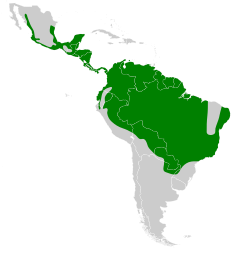
Curiosidades
- Significado do Nome:O nome “Acauã” tem origem indígena e significa “aquele que grita”. Esse nome faz referência ao chamado característico do Acauã, que é um grito alto e estridente.
- Seu nome científico é derivado do grego “herpeton” (cobra, serpente, réptil) e do latim “cachinnans” (gargalhando, que gargalha), resultando em "Caçador de serpentes que gargalha".
- Canto: Seu canto é característico e repetido seguidamente durante alguns segundos. No folclore amazonense, diz-se que seus gritos prenunciam a chegada de forasteiros. Já na região do Espinhaço, em Minas Gerais, prenunciam a morte de um conhecido.

Acauã filhote.